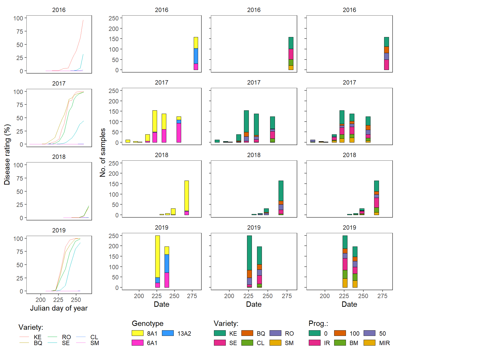
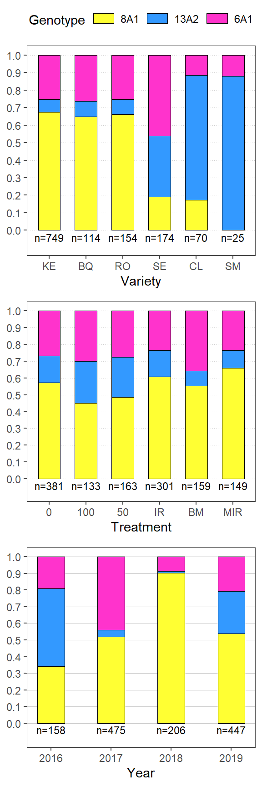
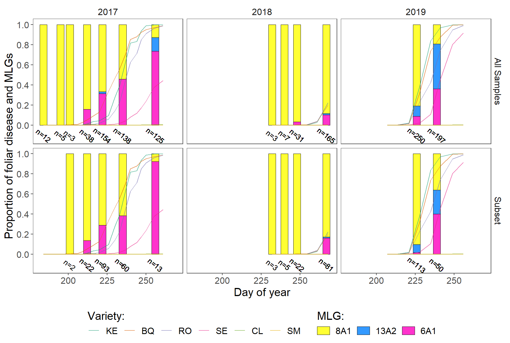

Population Data
Popoulation analysis
Presentation of the sampling and a descriptive analysis of the samples collected.
Load packages
list.of.packages <-
c(
"tidyverse",
"devtools",
"egg",
"tableHTML",
"kableExtra",
"conflicted"
)
new.packages <-
list.of.packages[!(list.of.packages %in% installed.packages()[, "Package"])]
#Download packages that are not already present in the library
if (length(new.packages))
install.packages(new.packages)
packages_load <-
lapply(list.of.packages, require, character.only = TRUE)
#Print warning if there is a problem with installing/loading some of packages
if (any(as.numeric(packages_load) == 0)) {
warning(paste("Package/s: ", paste(list.of.packages[packages_load != TRUE], sep = ", "), "not loaded!"))
} else {
print("All packages were successfully loaded.")
}## [1] "All packages were successfully loaded."rm(list.of.packages, new.packages, packages_load)
#Resolve conflicts
if(c("MASS", "dplyr")%in% installed.packages())conflict_prefer("select", "dplyr")
if(c("stats", "dplyr")%in% installed.packages()){
conflict_prefer("filter", "dplyr")
conflict_prefer("select", "dplyr")
}
#if instal is not working try
#install.packages("package_name", repos = c(CRAN="https://cran.r-project.org/"))Data import
Import the data and set the levels of the treatment (3 fixed and 3 variable doses) and variety (susceptible to resistant).
A single isolate belonging to 36A2 was excluded from further analysis due to low sample size.
samples <-
readRDS(file = here::here("data", "gen data", "final", "gendata.rds") )
samples <-
samples %>%
filter(Genotype != "36A2")
samples <-
samples %>%
mutate(Genotype = factor(Genotype, levels = c( "8A1","13A2","6A1" )))
samples$date <- as.Date(samples$date, "%m/%d/%Y")
paste( "The data set is consisted of", nrow(samples), "genotyped samples")## [1] "The data set is consisted of 1286 genotyped samples"#Prepare the poulation strata initials
samples$treatment <-
factor(samples$treatment, levels = c("0", "100","50","IR","BM" ,"MIR"))
samples <-
samples %>%
mutate(variety = factor(variety, levels =c("KE","BQ", "RO", "SE", "CL","SM"))) Sampling dates and number of samples.
samp_dates <-
samples %>%
group_by(year, date) %>%
summarise(`No. of Samples` = n()) %>%
rename(Year = year, Date = date)
write_csv(samp_dates, here::here("results", "gen", "Sampling dates&counts.csv"))
samp_dates %>%
kableExtra::kable()| Year | Date | No. of Samples |
|---|---|---|
| 2016 | 2016-09-24 | 158 |
| 2017 | 2017-07-03 | 12 |
| 2017 | 2017-07-14 | 5 |
| 2017 | 2017-07-20 | 3 |
| 2017 | 2017-07-31 | 38 |
| 2017 | 2017-08-10 | 154 |
| 2017 | 2017-08-23 | 138 |
| 2017 | 2017-09-13 | 125 |
| 2018 | 2018-08-20 | 3 |
| 2018 | 2018-08-28 | 7 |
| 2018 | 2018-09-05 | 31 |
| 2018 | 2018-09-24 | 165 |
| 2019 | 2019-08-14 | 250 |
| 2019 | 2019-08-27 | 197 |
s_tab <-
samples %>%
group_by(year,variety, treatment) %>%
summarise(count = n()) %>%
spread(variety, count) %>%
rename(Year = year,
Prog. = treatment) %>%
replace(is.na(.), 0) %>%
ungroup()
write_csv(s_tab, here::here("results", "gen", "Summary of isolates.csv"))
# s_tab %>%
# kable(format = "html") %>%
# kableExtra::kable_styling(latex_options = "striped")
years <-
s_tab %>%
group_by(Year) %>%
summarise(counts =n()) %>%
dplyr::select(counts) %>%
unlist
year_names <- unique(s_tab$Year)
tab <-
dplyr::select(s_tab, -c(Year)) %>%
tableHTML::tableHTML(.,
rownames = FALSE,
row_groups = list(c(years), c(year_names)),
# widths = c(50, 60, 70, rep(40, 6))
) %>%
# add_css_header(css = list('background-color', 'lightgray'), headers = c(1:ncol(s_tab)+1)) %>%
add_css_row(css = list('background-color', 'lightgray'),
rows = c(which(s_tab$Year %in% c(2017, 2019))+1)) %>%
add_theme('scientific')%>%
tableHTML_to_image(.,file =here::here("results", "gen", "Summary of isolates.png"),
type = "png")
rm(years, s_tab)
Table1
Frequency charts
The code
# plot successful fin
samples$plotID <- 1
line_size <- 0.13
cbbPalette <- c ("#3399ff", "#ff33cc","#ffff33")
dis_obs <- readRDS(file = here::here("data", "disease", "dis_obs.rds") )
p_dis <-
dplyr::filter(dis_obs, treatment == "Control") %>%
mutate(treatment = "Control plots") %>%
group_by(treatment, variety, year, julian_day) %>%
summarise(rating = mean(obs)) %>%
ggplot(aes(x = julian_day,
y = rating,
colour = variety,
group = variety)) +
geom_line(aes(y = rating),
size = 0.2,
linetype = "dotted") +
# scale_x_continuous(labels = c())+
scale_y_continuous(limits = c(0, 100))+
geom_line(size = 0.3) +
ylab("Disease rating (%)") +
xlab("Julian day of year") +
labs(colour = "Variety:")+
facet_wrap(~year, ncol = 1)+
theme_article()+
theme(legend.position = "bottom")+
guides(fill=guide_legend(nrow=2,byrow=TRUE),
colour = guide_legend(title.position = "top"))
# remove tuber samples
p_gen <-
ggplot(samples,aes(julian_day, fill = Genotype))+
# geom_col(aes(julian_day, plotID, fill = Genotype), width = 5, colour = "black", size = 0.1)+
geom_bar(stat = "count", position = "stack", width = 6,colour = "black", size = line_size)+
facet_wrap(~year, ncol = 1)+
xlab("Date")+
ylab("No. of samples")+
# ggtitle("")+
scale_fill_manual(values=cbbPalette)+
theme_article()+
theme( legend.position = "bottom",
legend.direction = "horizontal")+
guides(fill=guide_legend(nrow=2,byrow=TRUE,title.position = "top"))+
ggsave(filename= here::here("results", "gen", "freq", "Genotype per sampling vertical.png"),
width = 4, height =6, dpi = 620)
p_var <-
ggplot(samples,aes(julian_day, fill = variety))+
geom_bar(stat = "count", position = "stack", width = 6,colour = "black", size = line_size)+
facet_wrap(~year, ncol = 1)+
xlab("Date")+
# ylab("No. of samples")+
ylab("")+
# ggtitle("")+
theme_article()+
# labs(fill = "Variety")+
scale_fill_brewer("Variety:", palette = "Dark2") +
theme(
axis.title.y=element_blank(),
axis.text.y=element_blank(),
legend.position = "bottom",
legend.direction = "horizontal")+
guides(fill=guide_legend(nrow=2,byrow=TRUE,title.position = "top"))+
# theme(panel.grid.major = element_blank(), panel.grid.minor = element_blank(),
# panel.background = element_blank(), axis.line = element_line(colour = "black"))+
ggsave(filename= here::here("results", "gen", "freq", "Samples per date and variety.png"),
width = 3, height = 6, dpi = 620)
#plot samples per treatment/fixed reduced dose
p_prog <-
ggplot(samples,aes(julian_day, fill = treatment))+
geom_bar(stat = "count", position = "stack", width = 6,colour = "black", size = line_size)+
facet_wrap(~year, ncol = 1)+
xlab("Date")+
# ylab("No. of samples")+
ylab("")+
scale_fill_brewer("Prog.:", palette = "Dark2") +
theme_article()+
theme(
axis.title.y=element_blank(),
axis.text.y=element_blank(),
legend.position = "bottom",
legend.direction = "horizontal")+
guides(fill=guide_legend(nrow=2,byrow=TRUE,title.position = "top"))+
ggsave(filename= here::here("results", "gen", "freq", "Treatment dose per sampling vertical.png"),
width = 4, height =6, dpi = 620)
plot_list <- list(p_dis,p_gen, p_var, p_prog)
ggpubr::ggarrange(plotlist = plot_list,
widths = c(1,1.15,1,1),
# labels = c("r","rr"),
ncol = 5)+
ggsave(filename= here::here("results", "gen", "freq", "G and v sampling vertical.png"),
width = 9, height =7, dpi = 620)
The code
GenPalette <- c ("#ffff33", "#3399ff","#ff33cc")
lab_size <- 3
lab_pos_y <- -0.04
gen_prop <-
samples %>%
group_by(variety) %>%
count(Genotype, variety) %>%
rename(counts = n) %>%
mutate(prop = prop.table(counts)) %>%
mutate(perc = round(prop * 100,1)) %>%
arrange(desc(variety))
labels <-
samples %>%
count( variety) %>%
rename(counts = n) %>%
mutate(prop = prop.table(counts)) %>%
dplyr::select(counts) %>%
sapply( ., function(x) paste0("n=", x )) %>%
as.vector()
f_v <-
ggplot(gen_prop, aes(variety, prop, fill = Genotype)) +
geom_hline(
yintercept = seq(0 , 1, 0.1),
size = 0.2,
alpha = 0.8,
color = "gray",
linetype = "dotted"
)+
geom_bar(stat = "identity",
width = 0.6,
position = position_fill(reverse = TRUE),
color = "black",
size = .1) +
ylab("Frequency") +
xlab("Variety") +
annotate(
geom = "text",
label = rev(labels),
x = unique(gen_prop$variety),
y = lab_pos_y,
size = lab_size
)+
scale_fill_manual(values=GenPalette)+
theme_bw()+
egg::theme_article()+
scale_y_continuous(limits = c(-0.09, 1),
# expand = c(0, 0),
breaks = seq(0, 1, 0.1))+
theme(legend.position = "top",
axis.title.y=element_blank()
)
gen_prop_trt <-
samples %>%
group_by(treatment) %>%
count(Genotype, treatment) %>%
rename(counts = n) %>%
mutate(prop = prop.table(counts))%>%
mutate(perc = round(prop * 100,1))
labels <-
samples %>%
count(treatment) %>%
rename(counts = n) %>%
mutate(prop = prop.table(counts)) %>%
dplyr::select(counts) %>%
sapply(., function(x)
paste0("n=", x)) %>%
as.vector()
f_t <-
ggplot(gen_prop_trt, aes(treatment, prop, fill = Genotype)) +
geom_hline(
yintercept = seq(0 , 1, 0.1),
size = 0.2,
alpha = 0.8,
color = "gray",
linetype = "dotted"
) +
geom_bar(
stat = "identity",
width = 0.6,
position = position_fill(reverse = TRUE),
color = "black",
size = .1
) +
ylab("Proportion") +
xlab("Treatment") +
annotate(
geom = "text",
label = labels,
x = unique(gen_prop_trt$treatment),
y = lab_pos_y,
size = lab_size
) +
scale_fill_manual(values = GenPalette) +
egg::theme_article() +
scale_y_continuous(limits = c(-0.08, 1),
# expand = c(0, 0),
breaks = seq(0, 1, 0.1)) +
theme(axis.title.y = element_blank(),
legend.position = "none")
#Years
gen_prop_year<-
samples %>%
group_by(year) %>%
count(Genotype, year) %>%
rename(counts = n) %>%
mutate(prop = prop.table(counts))%>%
mutate(perc = round(prop * 100,1))
labels <-
samples %>%
count( year) %>%
rename(counts = n) %>%
mutate(prop = prop.table(counts)) %>%
dplyr::select(counts) %>%
sapply( ., function(x) paste0("n=", x )) %>%
as.vector()
f_y <-
ggplot(gen_prop_year, aes(year, prop, fill = Genotype)) +
geom_hline(
yintercept = seq(0 , 1, 0.1),
size = 0.2,
alpha = 0.8,
color = "gray",
linetype = "solid"
) +
geom_bar(
stat = "identity",
width = 0.45,
position = position_fill(reverse = TRUE),
color = "black",
size = .1
) +
ylab("Frequency") +
xlab("Year") +
annotate(
geom = "text",
label = labels,
x = unique(gen_prop_year$year),
y = lab_pos_y,
size = lab_size
) +
egg::theme_article() +
scale_y_continuous(
limits = c(-0.09, 1),
# expand = c(0, 0),
breaks = seq(0, 1, 0.1)
) +
scale_fill_manual(values = GenPalette) +
theme(axis.title.y = element_blank(),
legend.position = "none")
plotls <- list(f_v, f_t, f_y)
saveRDS(plotls,file = here::here("results", "gen", "freq", "freq_plots.RDS"))
ggpubr::ggarrange(plotlist = plotls,
heights = c(1.2,1,1),
# labels = c("r","rr"),
nrow = 3)+
ggsave(filename= here::here("results", "gen", "freq", "Freq_all.png"),
width = 2.9, height =9, dpi = 820)
Frequency tables
gen_prop %>%
dplyr::select(c(variety, Genotype, perc)) %>%
spread(variety, perc) %>%
lapply(., replace_na, 0) %>% tbl_df()## Warning in `[<-.factor`(`*tmp*`, !is_complete(data), value = 0): invalid
## factor level, NA generatedgen_prop_trt %>%
dplyr::select(c(treatment, Genotype, perc)) %>%
spread(treatment, perc) gen_prop_year %>%
dplyr::select(c(year, Genotype, perc)) %>%
spread(year, perc) Temporal structure
Proportion og MLG per sampling date.
dis_obs <-
filter(dis_obs, year != 2016)
########################################
#sus
#####################################################
sdf <-
samples %>%
dplyr::filter( variety %in% c("KE", "BQ","RO" )) %>%
dplyr::filter( treatment %in% c( "IR","0")) %>%
dplyr::filter( year != 2016)
temporal_prop_sus <-
sdf %>%
group_by(date) %>%
count(Genotype) %>%
rename(counts = n) %>%
mutate(prop = prop.table(counts)) %>%
mutate(perc = round(prop * 100,1)) %>%
select(date, Genotype, perc) %>%
spread(., Genotype, perc) %>%
replace(is.na(.), 0) %>%
arrange(date) %>%
add_column( ., Year = format(.$date, "%Y"), .before= "date") %>%
mutate("13A2+6A1 (%)" = `13A2` + `6A1`) %>%
rename("8A1 (%)" = "8A1",
"6A1 (%)" = "6A1",
"13A2 (%)" = "13A2",
"Sampling Date" = "date")
counts_df_sus <-
sdf%>%
group_by(date)%>%
count(counts =n())
temporal_prop_sus <-
add_column( temporal_prop_sus, `No. of Samples` =counts_df_sus$counts, .before= "8A1 (%)")
write_csv(temporal_prop_sus, here::here("results", "gen", "MLG per date sus.csv"))
counts_df_sus$labels <-
sapply(counts_df_sus[["counts"]], function(x) paste0("n=", x )) %>%
as.vector()
sdf <-
left_join(sdf, counts_df_sus, by = c("date")) %>%
mutate(set = "Subset")
########################################
#all
#####################################################
adf <-
samples %>%
# dplyr::filter( variety %in% c("KE", "BQ","RO" )) %>%
dplyr::filter( year != 2016)
temporal_prop <-
adf %>%
group_by(date) %>%
count(Genotype) %>%
rename(counts = n) %>%
mutate(prop = prop.table(counts)) %>%
mutate(perc = round(prop * 100,1)) %>%
select(date, Genotype, perc) %>%
spread(., Genotype, perc) %>%
replace(is.na(.), 0) %>%
arrange(date) %>%
add_column( ., Year = format(.$date, "%Y"), .before= "date") %>%
mutate("13A2+6A1 (%)" = `13A2` + `6A1`) %>%
rename("8A1 (%)" = "8A1",
"6A1 (%)" = "6A1",
"13A2 (%)" = "13A2",
"Sampling Date" = "date")
counts_df <-
adf%>%
dplyr::filter( year != 2016) %>%
group_by(date)%>%
count(counts =n())
temporal_prop <-
add_column( temporal_prop, `No. of Samples` =counts_df$counts, .before= "8A1 (%)")
write_csv(temporal_prop, here::here("results", "gen", "MLG per date.csv"))
counts_df$labels <-
sapply(counts_df[["counts"]], function(x) paste0("n=", x )) %>%
as.vector()
adf <-
left_join(adf, counts_df, by = c("date")) %>%
mutate(set = "All Samples")
#####################################################
#plot
#####################################################
samples_fig <-
bind_rows( adf, sdf)
cbbPalette <- c ( "#ffff33","#3399ff", "#ff33cc")
dis_obs <-
dplyr::filter(dis_obs, treatment == "Control") %>%
mutate(treatment = "Control plots") %>%
group_by(treatment, variety, year, julian_day) %>%
summarise(rating = mean(obs))
ptemp <-
ggplot() +
geom_bar(
data = samples_fig,
aes(julian_day, fill = Genotype),
stat = "count",
position = "fill",
width = 4.7,
colour = "black",
size = line_size
) +
geom_line(
data = dis_obs,
aes(
x = as.numeric(julian_day),
y = rating / 100,
colour = variety,
group = variety
),
size = .4,
alpha = .6,
linetype = "solid"
) +
facet_grid( year~ set ) +
xlab("Day of year")+
ylab("Proportion of foliar disease and MLGs")+
scale_y_continuous(limits = c(-0.132, 1),
breaks = seq(0, 1, 0.2)) +
scale_fill_manual(values=cbbPalette)+
theme_article()+
labs(fill = "MLG:",
color = "Variety")+
scale_colour_brewer("Variety:",
palette = "Dark2")+
# ## Uncomment for vertical plot
# geom_text(data = samples_fig,
# aes(x = julian_day, y = -0.07, label = labels),
# size = 2.2,
# check_overlap = FALSE) +
# theme( legend.position = "bottom",
# legend.direction = "horizontal")+
# guides(fill=guide_legend(nrow=1,byrow=TRUE,title.position = "top"),
# color=guide_legend(nrow=2,byrow=TRUE,title.position = "top"))+
# ggsave(filename= here::here("results", "gen", "freq", "Genotype and DPC per sampling vertical.png"),
# width = 5, height =7, dpi = 620)
# Uncomment for horisontal plot
facet_grid( set~ year ) +
geom_text(data = samples_fig,
aes(x = julian_day, y = -0.1, label = labels),
size = 3.4,
angle = -40) +
guides(fill=guide_legend(nrow=1,byrow=TRUE,title.position = "top"),
color=guide_legend(nrow=1,byrow=TRUE,title.position = "top"))+
theme(text = element_text(size = 15),
legend.position = "bottom")
ptemp
ggsave(plot = ptemp,
filename= here::here("results", "gen", "freq", "Genotype and DPC per sampling horisontal.png"),
width = 10, height =6.5, dpi = 620)session_info()## - Session info ----------------------------------------------------------
## setting value
## version R version 3.6.3 (2020-02-29)
## os Windows 10 x64
## system x86_64, mingw32
## ui RTerm
## language (EN)
## collate English_United States.1252
## ctype English_United States.1252
## tz Europe/London
## date 2020-05-11
##
## - Packages --------------------------------------------------------------
## package * version date lib source
## assertthat 0.2.1 2019-03-21 [1] CRAN (R 3.6.1)
## backports 1.1.5 2019-10-02 [1] CRAN (R 3.6.1)
## broom 0.5.5 2020-02-29 [1] CRAN (R 3.6.3)
## callr 3.4.2 2020-02-12 [1] CRAN (R 3.6.3)
## cellranger 1.1.0 2016-07-27 [1] CRAN (R 3.6.1)
## cli 2.0.2 2020-02-28 [1] CRAN (R 3.6.3)
## colorspace 1.4-1 2019-03-18 [1] CRAN (R 3.6.1)
## conflicted * 1.0.4 2019-06-21 [1] CRAN (R 3.6.1)
## cowplot 1.0.0 2019-07-11 [1] CRAN (R 3.6.1)
## crayon 1.3.4 2017-09-16 [1] CRAN (R 3.6.1)
## desc 1.2.0 2018-05-01 [1] CRAN (R 3.6.1)
## devtools * 2.2.2 2020-02-17 [1] CRAN (R 3.6.3)
## digest 0.6.25 2020-02-23 [1] CRAN (R 3.6.3)
## dplyr * 0.8.5 2020-03-07 [1] CRAN (R 3.6.3)
## egg * 0.4.5 2019-07-13 [1] CRAN (R 3.6.1)
## ellipsis 0.3.0 2019-09-20 [1] CRAN (R 3.6.1)
## evaluate 0.14 2019-05-28 [1] CRAN (R 3.6.1)
## fansi 0.4.1 2020-01-08 [1] CRAN (R 3.6.3)
## farver 2.0.3 2020-01-16 [1] CRAN (R 3.6.3)
## forcats * 0.4.0 2019-02-17 [1] CRAN (R 3.6.1)
## fs 1.3.1 2019-05-06 [1] CRAN (R 3.6.1)
## generics 0.0.2 2018-11-29 [1] CRAN (R 3.6.1)
## ggplot2 * 3.2.1 2019-08-10 [1] CRAN (R 3.6.1)
## ggpubr 0.2.4 2019-11-14 [1] CRAN (R 3.6.2)
## ggsignif 0.6.0 2019-08-08 [1] CRAN (R 3.6.1)
## glue 1.4.0 2020-04-03 [1] CRAN (R 3.6.3)
## gridExtra * 2.3 2017-09-09 [1] CRAN (R 3.6.1)
## gtable 0.3.0 2019-03-25 [1] CRAN (R 3.6.1)
## haven 2.1.1 2019-07-04 [1] CRAN (R 3.6.1)
## here 0.1 2017-05-28 [1] CRAN (R 3.6.1)
## highr 0.8 2019-03-20 [1] CRAN (R 3.6.1)
## hms 0.5.2 2019-10-30 [1] CRAN (R 3.6.1)
## htmltools 0.4.0 2019-10-04 [1] CRAN (R 3.6.1)
## httr 1.4.1 2019-08-05 [1] CRAN (R 3.6.1)
## jsonlite 1.6.1 2020-02-02 [1] CRAN (R 3.6.3)
## kableExtra * 1.1.0 2019-03-16 [1] CRAN (R 3.6.1)
## knitr 1.25 2019-09-18 [1] CRAN (R 3.6.1)
## labeling 0.3 2014-08-23 [1] CRAN (R 3.6.0)
## lattice 0.20-38 2018-11-04 [2] CRAN (R 3.6.3)
## lazyeval 0.2.2 2019-03-15 [1] CRAN (R 3.6.1)
## lifecycle 0.2.0 2020-03-06 [1] CRAN (R 3.6.3)
## lubridate 1.7.4 2018-04-11 [1] CRAN (R 3.6.1)
## magrittr 1.5 2014-11-22 [1] CRAN (R 3.6.1)
## memoise 1.1.0 2017-04-21 [1] CRAN (R 3.6.1)
## modelr 0.1.5 2019-08-08 [1] CRAN (R 3.6.1)
## munsell 0.5.0 2018-06-12 [1] CRAN (R 3.6.1)
## nlme 3.1-144 2020-02-06 [2] CRAN (R 3.6.3)
## pillar 1.4.3 2019-12-20 [1] CRAN (R 3.6.3)
## pkgbuild 1.0.6 2019-10-09 [1] CRAN (R 3.6.1)
## pkgconfig 2.0.3 2019-09-22 [1] CRAN (R 3.6.1)
## pkgload 1.0.2 2018-10-29 [1] CRAN (R 3.6.1)
## plyr 1.8.4 2016-06-08 [1] CRAN (R 3.6.1)
## prettyunits 1.0.2 2015-07-13 [1] CRAN (R 3.6.1)
## processx 3.4.1 2019-07-18 [1] CRAN (R 3.6.1)
## ps 1.3.0 2018-12-21 [1] CRAN (R 3.6.1)
## purrr * 0.3.3 2019-10-18 [1] CRAN (R 3.6.1)
## R6 2.4.1 2019-11-12 [1] CRAN (R 3.6.3)
## RColorBrewer 1.1-2 2014-12-07 [1] CRAN (R 3.6.0)
## Rcpp 1.0.4.6 2020-04-09 [1] CRAN (R 3.6.3)
## readr * 1.3.1 2018-12-21 [1] CRAN (R 3.6.1)
## readxl 1.3.1 2019-03-13 [1] CRAN (R 3.6.1)
## remotes 2.1.1 2020-02-15 [1] CRAN (R 3.6.3)
## reshape2 1.4.3 2017-12-11 [1] CRAN (R 3.6.1)
## rlang 0.4.5 2020-03-01 [1] CRAN (R 3.6.3)
## rmarkdown 2.1 2020-01-20 [1] CRAN (R 3.6.3)
## rprojroot 1.3-2 2018-01-03 [1] CRAN (R 3.6.1)
## rstudioapi 0.11 2020-02-07 [1] CRAN (R 3.6.3)
## rvest 0.3.5 2019-11-08 [1] CRAN (R 3.6.3)
## scales 1.1.0 2019-11-18 [1] CRAN (R 3.6.3)
## sessioninfo 1.1.1 2018-11-05 [1] CRAN (R 3.6.1)
## stringi 1.4.6 2020-02-17 [1] CRAN (R 3.6.2)
## stringr * 1.4.0 2019-02-10 [1] CRAN (R 3.6.1)
## tableHTML * 2.0.0 2019-03-16 [1] CRAN (R 3.6.1)
## testthat 2.2.1 2019-07-25 [1] CRAN (R 3.6.1)
## tibble * 3.0.0 2020-03-30 [1] CRAN (R 3.6.3)
## tidyr * 1.0.0 2019-09-11 [1] CRAN (R 3.6.1)
## tidyselect 1.0.0 2020-01-27 [1] CRAN (R 3.6.3)
## tidyverse * 1.2.1 2017-11-14 [1] CRAN (R 3.6.1)
## usethis * 1.5.1 2019-07-04 [1] CRAN (R 3.6.1)
## vctrs 0.2.4 2020-03-10 [1] CRAN (R 3.6.3)
## viridisLite 0.3.0 2018-02-01 [1] CRAN (R 3.6.1)
## webshot 0.5.1 2018-09-28 [1] CRAN (R 3.6.1)
## withr 2.1.2 2018-03-15 [1] CRAN (R 3.6.1)
## xfun 0.10 2019-10-01 [1] CRAN (R 3.6.1)
## xml2 1.2.2 2019-08-09 [1] CRAN (R 3.6.1)
## yaml 2.2.0 2018-07-25 [1] CRAN (R 3.6.0)
##
## [1] C:/Users/mlade/Documents/R/win-library/3.6
## [2] C:/Program Files/R/R-3.6.3/library